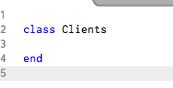
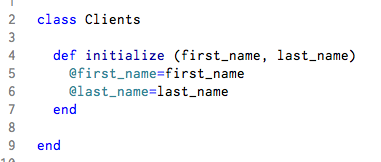
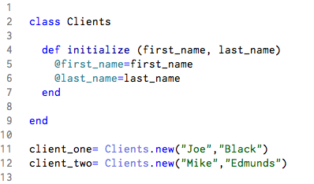
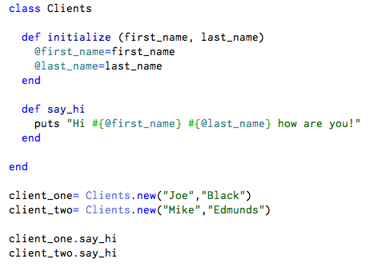
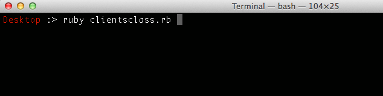
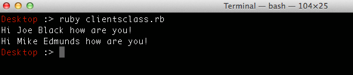

Blog/ Crash course on Ruby Classes
november 28,2014
This is a crash course on how to build a class in ruby. Lets rock and roll and create a class.
In the next pictures pay particular attention to syntax.
In your text editor create a new class name it using CamelCase and save with .rb extension.

Next we create a method called initialize. Basically what this method does is that every time you create new client, it "tags/expects/needs" these two characteristics (first_name, last_name). This are called instance variables and you can spot them with the @. Think about it this way, imagine we have only two clients, they both belong to the class Clients but one client is Joe Black and the other is Mike Edmunds.

Now lets create two instances/objects. Check the syntax, we do it by using variables, one will name client_one and the other client_two.

There we have it. We have created a class! But its a little dull, lets make this class do something, how about a greeting?
The #{} syntax is string interpolation. It basically takes what you give it, evaluates it and gives you a string so you can print to console. Here you can see that we call the method greeting outside the class.

Now lets run our program. Go to your terminal and run the program. Remember that to run a program you type ruby nameoftheprogram.rb I named my program clientsclass.rb

It worked, here is our greeting message!

There you go! That was a crash course on the building blocks of a class in ruby. Now it is up to your imagination!
Andy-dev —OVER AND OUT